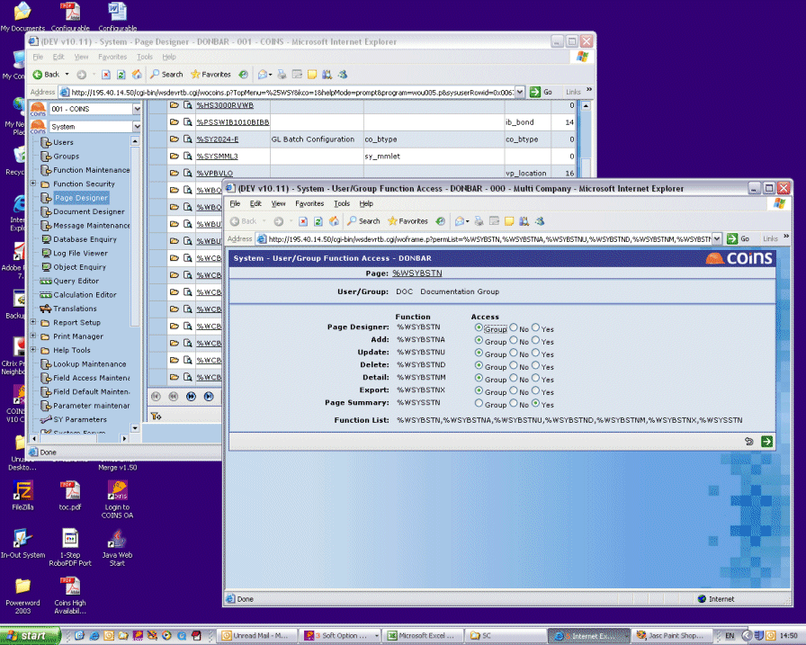

To change a user's function security:
- Go to Interactive Security Update.
- Click link for the user or group.
- In the second window, navigate to the page for which you want to set the permissions.
NOTE
As you display each new screen in the second window, - To change the permissions for the current user or group, click the buttons for the appropriate permissions. For a user:
-
Group = The user's access depends on the permissions of the groups to which the user belongs.
-
Yes = The user has access to this function (even if the group does not).
-
No = The user does not have access to this function (even if the group does).
-
Group = This group does not determine the access for this function.
-
Yes = Users that belong to this group have access to this function.
-
No = Users that belong to this group do not have access to this function.
- Click
 .
.
The third screen shows all the functions on the page, including any buttons, tabs, options, etc, with radio buttons marked with the current permissions.
For a group: